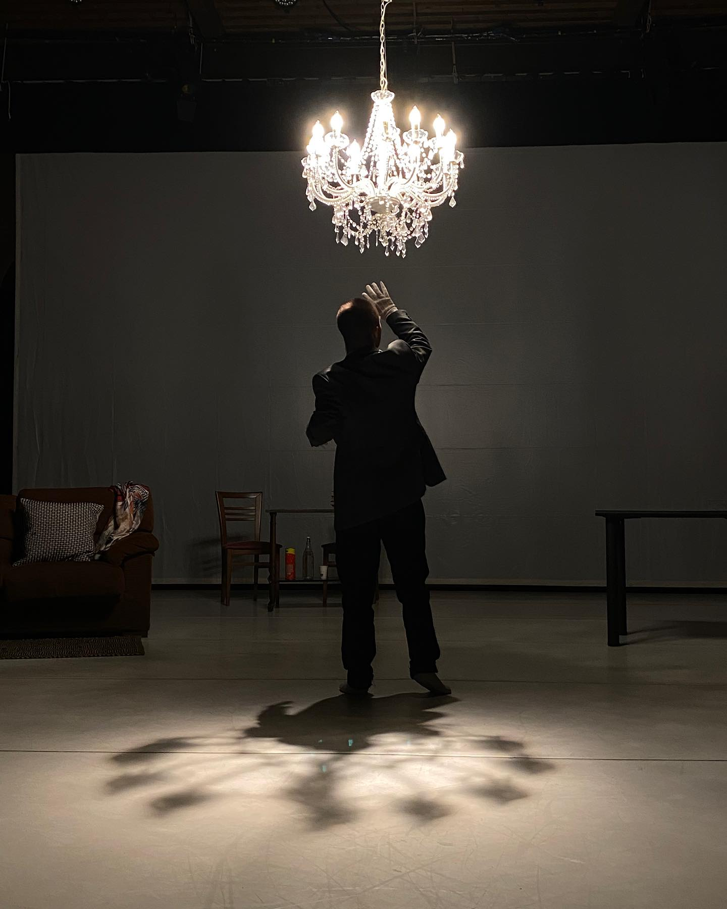

SUITE
Suite è uno spettacolo di danza contemporanea che nasce dall'incontro tra movimento, musica e relazione.
di frammenti,
immagini,
possibilità.
In ambito musicale, la suite — dal francese “successione” — è una composizione formata da una serie di brani pensati per essere eseguiti in sequenza. Ogni pezzo è un mondo a sé e, allo stesso tempo, parte di un disegno più ampio, come se ciascun movimento fosse una tappa di un viaggio emotivo.
Ma il termine indica anche un particolare tipo di camera d'albergo: uno spazio privato, articolato come un piccolo appartamento, che si abita per un tempo limitato, in transito tra un prima e un dopo.
Lo spettacolo nasce da questa doppia ispirazione e si compone di frammenti, episodi e immagini in movimento che si susseguono come in una partitura danzata.
Ogni quadro attraversa un momento della vita, una sfumatura dell'esperienza umana: gioia, smarrimento, desiderio, paura, perdita, scoperta.
Otto interpreti danno corpo e voce a questo mosaico emotivo, intrecciando gesto e suono in una narrazione che scorre come un filo sottile.
Ne emerge un microcosmo in cui si riflette la complessità dell'esistenza: un percorso fatto di passaggi, di eventi talvolta lieti, altre volte dolorosi, che scandiscono il tempo della vita.
A attraversarlo è anche — e soprattutto — un enigma, una tensione sottile: qualcosa accade, ma il suo significato non è subito chiaro.
Il lavoro non cerca risposte, ma lascia spazio. Spazio per sentire, riflettere, riconoscersi.

SUONO
La musica elettronica di Kino, suonata dal vivo, accompagna ogni frammento, creando uno spazio sonoro che è esso stesso protagonista.
LUCE · SPAZIO
Le luci e la scena, curate da Antonio Rinaldi, costruiscono atmosfere sospese e silenziose, evocando la luce, le geometrie e le solitudini dei quadri di Edward Hopper, in cui ogni immagine sembra racchiudere una storia ancora da raccontare.